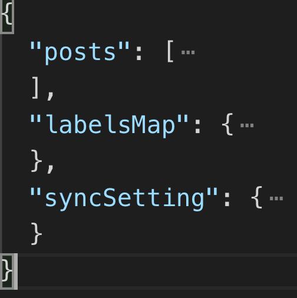

最近使用 Electron 开发了一款知识管理客户端应用 - 布丁笔记，主要功能是用来管理自己的私人笔记和公开博客，支持一键上传 github，亦可同步 github issues
当然，关于布丁笔记如何实现的，我会在后续的文章中更新，今天主要是来聊一聊如何使用 Electron 快速开发一款客户端应用
介绍
正如我们使用的 web 技术一样，Electron 也是使用 Javascript、HTML 和 CSS 来快速简便地搭建一个跨平台的客户端应用
具体来说，Electron 是通过将 Chromium 和 Node.js 合并到同一个运行时环境中，并将其打包为 Mac，Windows 和 Linux 系统下的应用来实现这一目的的
所以，它可以利用 Chromium 的浏览器引擎来完成 UI 渲染，也可以利用 Node.js 实现服务端 JS 编程并可以直接操作文件和调用系统 API，甚至操作数据库，同时，还可以使用 Node 提供的 request 模块进行网络请求，无需考虑跨域
运行原理
Chromium
相当于 Chrome 的实验版，新功能会先在 Chromium 上验证，后续才应用在 Chrome 上
Node.js
Node.js 是非常强大的，既可以写后台的 CRUD，又可以做中间件，现在又可以写前端
在 Electron 中，主要运用其 Path、fs、Crypto 等模块，操作系统底层 API
系统API
内置原生应用程序接口，以支持 GUI，调用系统通知、打开系统文件夹等
主进程
Electron 有两种进程：主进程和渲染进程，两者之间可以进行进程间通信
主进程可以创建多个渲染进程；同时控制整个应用生命周期，包括启动、退出 APP 以及对 APP 做一些监听；主要用来处理原生应用逻辑，调用系统底层功能，可调用 Node API、Electron 主进程 API
一个 Electron 应用有且只有一个主进程，对应为 package.json 的 main 脚本的进程
渲染进程
渲染进程负责界面渲染，做一些界面交互，可以创建浏览器窗口，也可以调用 Node API、DOM API、Electron 渲染进程 API
不妨把渲染进程想像成一个浏览器窗口，它能存在多个并且相互独立，不同的是，它能调用 Node API
基础
生命周期
通过主进程的 app 模块控制整个应用的生命周期
比如当初始化时完成时触发 ready 事件
app.on('ready', () => {
// 创建窗口、加载页面等操作
createWindow()
})
当所有的窗口都关闭时会触发 window-all-closed 事件
app.on('window-all-closed', () => {
if(process.platform !== 'darwin'){
app.quit(); // 退出应用
}
})
窗口
Electron 提供了一个 BrowserWindow 模块用于创建和控制浏览器窗口
通过关键字 new 实例化返回 win 对象
win = new BrowserWindow({
width: 1100, // 窗口宽度
height: 800, // 窗口高度
minWidth: 900,
minHeight: 600,
title: '布丁笔记',
fullscreen: false, // 不允许全屏
resizable: false // 不允许改变窗口size，不然布局就乱了啊
})
窗口创建完是一片空白的，还需要通过 win.loadURL() 来加载要显示的页面
win.loadURL('app://./index.html')
shell 模块
使用系统默认应用管理文件和 URL，在主进程和渲染进程中都可以用到该模块
import { shell } from 'electron'
shell.moveItemToTrash(fullPath) // 将文件删除至电脑回收站
shell.openExternal(`file://${postPath}.html`) // 在默认浏览器中打开URL
打包应用
electron-builder 是基于 electron-packager 打包出来的程序再做安装处理，将项目打包成安装文件
npm install electron-builder -S // 安装
electron-builder --win // 打包
进程通信
渲染进程如果想进行原生的 GUI 操作，必须和主进程通讯，请求主进程来完成这些操作
在讲具体的通信过程前，我们先了解下 EventEmitter 类，它是 NodeJS 事件的基础，由 NodeJS 中的 events 模块导出
EventEmitter 的核心就是事件触发与事件监听器功能的封装。它实现了事件模型需要的接口，包括 addListener，removeListener, emit 及其它工具方法. 同原生 JavaScript 事件类似， 采用了发布/订阅(观察者)的方式， 使用内部 _events 列表来记录注册的事件处理器
接下来提到的 ipcRenderer 和 ipcMain 的 on、send 进行监听和发送消息都是 EventEmitter 定义的相关接口
渲染进程向主进程通信
ipcRenderer 是一个 EventEmitter 的实例，可以使用其 send 或 sendSync 方法发送异步或同步的消息到主进程，同时可以接收主进程回复的消息
// 在渲染进程引入ipcRenderer
import { ipcRenderer } from 'electron'
ipcRenderer.send('sync-render', '我是来自渲染进程的异步消息')
const msg = ipcRenderer.sendSync('async-render', '我是来自渲染进程的同步消息')
注意：发送同步消息将会阻塞整个渲染进程，直到收到主进程的响应。所以我们在实际项目开发中应该尽可能的使用异步通信
ipcMain 模块也是 EventEmitter 类的一个实例，用于监听渲染进程传过来的消息并处理
ipcMain.on('sync-render', (event, data) => {
console.log(data);
})
主进程向渲染进程通信
webContents 是一个事件发出者，它负责渲染并控制网页，也是 BrowserWindow 对象的属性
在 ipcMain 中的 event.sender，返回发送消息的 webContents 对象，所以包含着 send() 方法用于发送消息
在 ipcMain 接受消息的回调函数中，我们可以回应消息到渲染进程
ipcMain.on('sync-render', (event, data) => {
console.log(data);
event.sender.send('main-msg', '主进程收到了渲染进程的【异步】消息！')
})
渲染进程通过 ipcRenderer.on 监听
ipcRenderer.on('main-msg', (event, msg) => {
console.log(msg);
})
渲染进程间通信
Electron 并没有提供渲染进程之间相互通信的方式，我们可以在主进程中建立一个消息中转站
渲染进程之间通信首先发送消息到主进程，主进程的中转站接收到消息后根据条件进行分发
remote
remote 模块为渲染进程和主进程通信提供了一种简单方法
在 Electron 中，有许多模块只存在主进程中，想要调用这些模块的方法需要通过 ipc 模块向主进程发送消息，让主进程调用这些方法，而使用 remote 模块，可以在渲染进程中调用这些只存在于主进程对象的方法
import { remote } from 'electron'
const BrowserWindow = remote.BrowserWindow // 访问主进程中的BrowserWindow模块
let win = new BrowserWindow() // 其他的跟主进程的操作都一样
win.setRepresentedFilename(this.post.localPath)
win.setDocumentEdited(true)
win.setTitle('布丁笔记')
数据持久存储
数据持久化有很多种方案，因为是前端浏览器，我们可以选择 localStorage, Cookie，indexDB 等等
考虑可靠性，持久化以及存储空间，还可以通过 Electron 写文件的方式，把数据写入到应用路径下
这样即使 app 被卸载了，只要数据没被清空，用户数据还在
通过 Electron app getPath 可以获得应用存储路径
import { app } from 'electron'
app.getPath('userData')
而对于文件是否写入的判断，以及进程间的数据共享，这里我推荐使用开源库 lowdb，以 key-value 的格式存储 json 文件
lowdb 是一个由 Lodash 支持的小型本地 JSON 数据库（支持 Node，Electron 和浏览器）

总结
Electron=Node.js+ 谷歌浏览器 + 平常的 JS 代码生成的应用，最终打包成安装包，就是一个完整的客户端应用Electron分两个进程，主进程负责原生应用逻辑的创建以及底层功能的调用，渲染进程负责 UI 界面展示- 两个进程间是通过
iPCRender和iPCMain方法，以及remote模块通信，前者是是基于发布订阅机制，自定义事件的监听和触发进行进程间通信；后者类似于挂载在全局的属性上进行通信 Electron相当于给React或者Vue生成的单页面应用套了一层壳，如果涉及到文件操作这类的复杂功能，就要依靠Electron的主进程，因为主进程可以直接调用Node.js的API，还可以调用系统底层功能